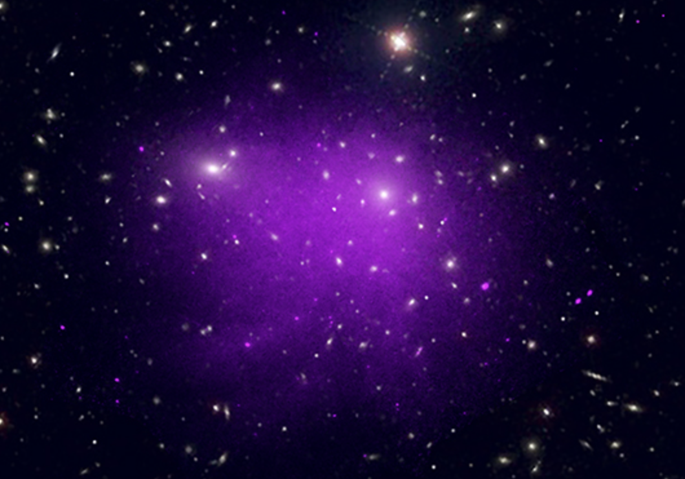

The intracluster medium (ICM) filling galaxy clusters is a hot, weakly collisional, and weakly magnetized plasma. Despite being studied for decades, many important microphysical properties of such plasmas remain unknown. Viscosity and thermal conduction are the clearest examples: the standard, theoretical recipes that derive them from density and temperature may be fundamentally inapplicable when the collision rate is low and a magnetic field is present, even if that field is dynamically weak.
These processes are characterized by the plasma microscale (typically below a few kpc in the ICM); however, their effects can be felt on much larger scales. For instance, they shape how turbulence develops, dissipates, and regulates the thermal state of the ICM. Additionally, they indirectly affect the re-acceleration of cosmic-ray electrons, which we observe as radio halos and relics.
While theoretical and numerical progress in this field has developed rapidly over the last 15 years and advanced our understanding of the fundamental properties of such plasmas, observational constraints remain very limited. Our group develops and implements observational tests of these properties, mainly through X-ray observations. Essentially, we set up controlled plasma experiments within the ICM.
Selected relevant publications:
Zhuravleva I., Churazov E., Schekochihin A. A., et al. Suppressed effective viscosity in the bulk intergalactic plasma. Nature Astronomy, 3, 832 (2019).
Heinrich A., Zhuravleva I., Zhang C., et al. Merger-driven multiscale ICM density perturbations: testing cosmological simulations and constraining plasma physics. MNRAS, 528, 7274 (2024).
Kunz M. W., Jones T. W., Zhuravleva I. Plasma Physics of the Intracluster Medium. Handbook of X-ray and Gamma-ray Astrophysics (2022).
Image credit: X-ray: NASA/CXC/Univ. of Chicago, I. Zhuravleva et al, Optical: SDSS; Nature Astronomy, 3, 832 (2019)
